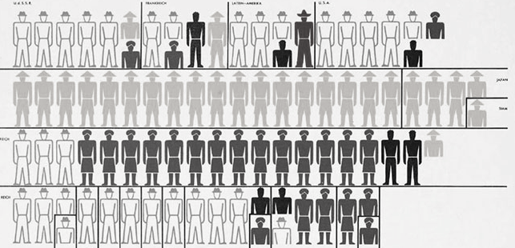
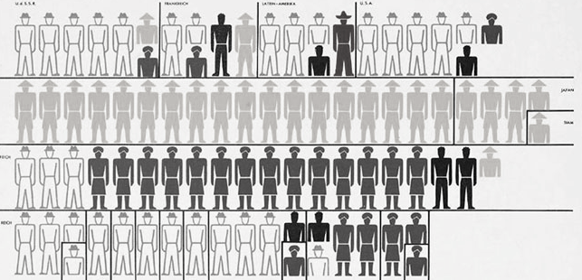

Un peu d'histoire...
L’isotype est le précurseur des pictogrammes, ces signes que nous voyons tous les jours dans les aéroports et sur les portes des toilettes.
En savoir plus
L’isotype est le précurseur des pictogrammes, ces signes que nous voyons tous les jours dans les aéroports et sur les portes des toilettes.
Otto Neurath est un philosophe, sociologue et économiste autrichien. Il fut un des rédacteurs en 1929 du texte « La Conception scientifique du monde » plus connu sous le nom de Manifeste du Cercle de Vienne.
Neurath crée l'ISOTYPE, ou International System Of TYpographic Picture Education, conçue comme méthode de représentation symbolique de données quantitatives ou d'informations pratiques au moyen d'icônes facilement interprétables. À partir des années trente, il cherche à exploiter l'Isotype en vue d'en faire un médium de communication universel ou International Picture Language.
Alors directeur de l'International Foundation for Visual Education, il applique les principes de ce langage dans Modern Man in the Making, un volume illustré de graphiques montrant l'évolution des modes de vie entre divers moments du passé et la modernité: espérance de vie, chômage, flux migratoires, densité urbaine, consommation, etc.